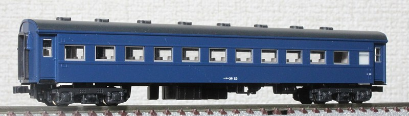
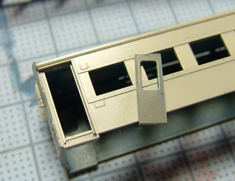
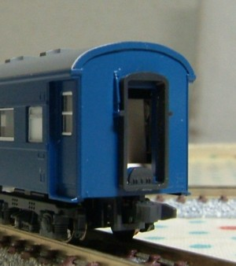
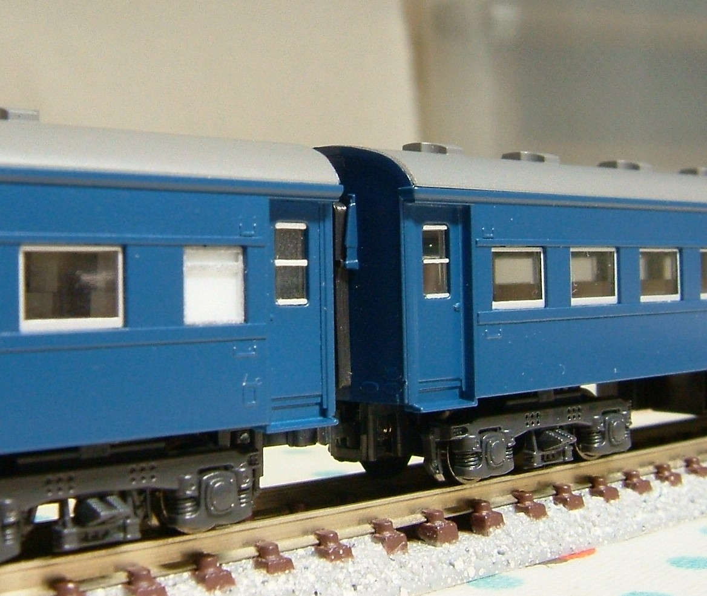
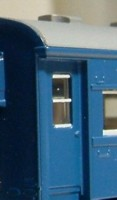
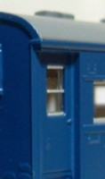

オハ36
オハ35戦後型にTR40をつけた
スハ42
型をアルミサッシ化などにより軽量化した結果 重量区分が変わった車両です。
ナハ10系などの軽量客車と同じタイプのドア・ずらりと並ぶアルミサッシが特徴です。
このオハ36に電気暖房をつけて再び重くなったものがスハ40型で、外見はオハ36とほとんど一緒です。
電気暖房をつけると形式が変わるため、オハ36型には2000番台は存在しません。

まずは形式写真風に。
KATOのオハフ33をタネに、こんな加工をしています。
窓枠を削り取り、スハ43系メイクアップパーツのアルミサッシ窓をはめこみ。
(当初予定はよりシャープなスロ62用でしたが、塗膜の厚みで入らず。。。)
トイレ窓はKATO 新スハ43系(青)用。窓枠を銀に塗装の上で使用。
ドアをナハ11のものに交換。
キャンパス止めはイエロートレインのスハ43系用。キャンパス止め部分のみを漏斗の部分を削って使用。
台車はKATO 新スハ43系用のTR47。
(本当はTR40でTR47とはまくらばねの本数が異なります(4本)が、目をつぶってます…。)
IPAにより塗装剥離の上再塗装。
青15号はモリタのものに白を若干混ぜて色あせた感じを表現してみましたが、単に明るくなっただけかも。
あと2014年には屋根をダークグレーに塗り、ステップを黒塗装しています。ずいぶん落ち着きました。
ちなみに最近、トイレ・洗面所窓の白パーツ(スハ43のもの)が経年で変色しないか気になり始めています。
本家のスハ43のほうはずいぶん黄ばんできてます。
ちょっとがっちり接着してしまったので(残念)。

メイキングです。
窓枠を削り取り、ドアのくりぬいたところです。これからはめこむところ。

妻面のキャンパス止めです。
オハ35戦後型/スハ42/オハ36/スハ40の屋根は、鋼板とキャンパスの2種類があるのですがなぜかオハ36はほとんどキャンパスのようです。
キャンパス止めをどう表現するか(実質どのパーツを使うか)は毎回悩みます…。

2両つなげてみました(こんなに手間が掛かるものを2両作ってます…)。
東京発の九州方面の急行のイメージです(勝手な想像)。ナハ10系とつなげてもよく似合います。


ちなみにナハ10の扉の窓ガラス、桟が3本印刷されているだけとおもいきや「上下」がありきちんと段違いになっています。
最初それに気づかず、見事に 1/2で上下逆に接着してしまい修正にえらい苦労しました…。(左：修正前 → 右：修正後)
DD54 とつなげるのが楽しみです。